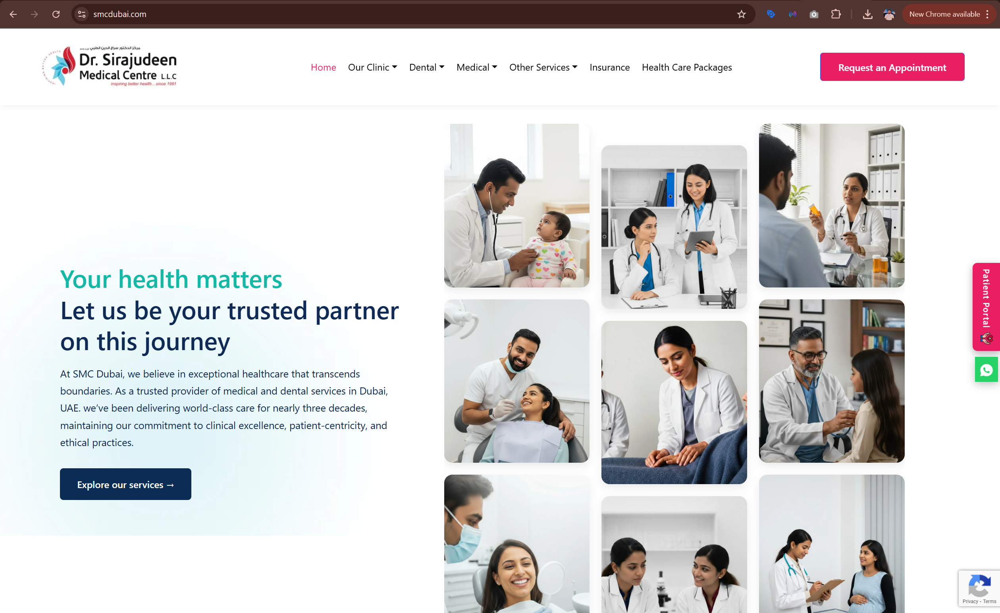
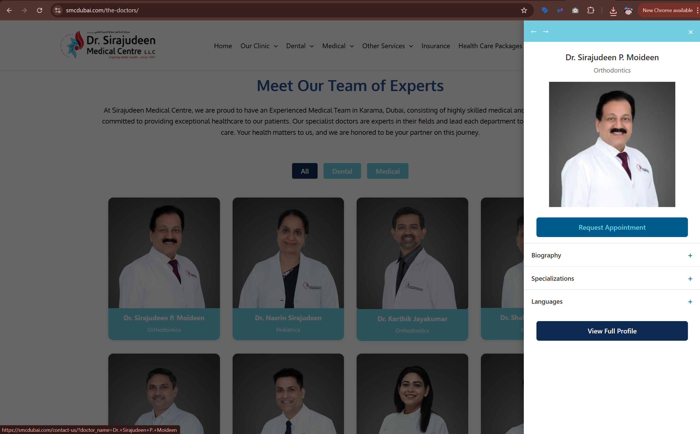

SMC Medical Centre
Aligning SEO strategy, website improvements, and agency execution for a healthcare brand.
SMC Medical Centre had already engaged an SEO agency, but the clinic needed stronger oversight, clearer accountability, and a more structured approach to digital progress. I stepped in as a consulting partner to review the agency’s work, track deliverables, guide website improvements, and help bridge the gap between strategy and execution. My role expanded into technical website development, SEO coordination, and making sure the clinic’s digital presence improved through practical, measurable action.

Healthcare clinic with active SEO engagement
The clinic had already appointed an SEO agency and needed a consulting layer to improve clarity, oversight, and execution quality.
Limited visibility into delivery and progress
The business needed a clearer view of what was being done, what was pending, and what changes actually mattered.
SEO consulting, coordination, and website support
I worked across reporting review, agency communication, technical implementation, and improvement planning.
Practical improvements with accountable execution
The goal was to convert SEO from a vague monthly activity into a more visible and managed growth system.
The clinic needed stronger control over its digital growth work
SMC had already invested in SEO support, but the internal team needed an experienced marketing point of view that could evaluate the work, ask the right questions, and keep momentum moving in the right direction.
What I walked into
The clinic had a new website, an external SEO agency in place, and an active interest in improving search visibility. What was missing was tighter oversight, better validation of deliverables, and closer alignment between technical website work and the broader SEO strategy being discussed.
Core gaps
- Limited visibility into actual SEO deliverables
- Need for stronger communication between clinic and agency
- Website improvements that required technical follow-through
- No clear internal filter for prioritising recommended changes
- SEO discussions that needed translation into practical actions
- Need for better structure around local SEO and content readiness
Consulting across strategy, coordination, and technical execution
My role was not limited to reviewing reports. I acted as the link between the clinic and the SEO agency, helped assess what was being delivered, and also supported the website work needed to move recommendations into execution.
Consulting and oversight
- Reviewed SEO proposals, monthly reports, and deliverables
- Tracked whether agreed items were actually being completed
- Joined meetings with the clinic and the SEO agency
- Helped the clinic evaluate recommendations with a marketing lens
Website and implementation support
- Worked on website updates and front-end development tasks
- Supported doctor profile and content structure improvements
- Helped align on-page implementation with SEO needs
- Bridged strategy with practical execution inside WordPress
Turning broad SEO activity into a more managed growth process
The work centered on making the clinic’s digital marketing efforts more transparent, more actionable, and better connected to the website experience patients were actually using.
SEO deliverables review
Reviewed monthly progress, deliverables, and agency commitments to help the clinic understand what work was truly being done.
- Checked promised on-page and technical SEO items
- Reviewed reporting structure and progress summaries
- Compared recommendations against actual implementation
- Created a clearer internal view of delivery status
Agency coordination
Acted as a communication bridge between the clinic team and the SEO agency so discussions could move faster and with more clarity.
- Joined calls and reviewed follow-up points
- Helped translate technical language into business decisions
- Raised questions around scope, timing, and priority
- Improved accountability across discussions
Website improvement support
Supported the clinic website as a working marketing asset rather than leaving it disconnected from the SEO process.
- Worked on WordPress-based implementation tasks
- Helped improve page structure and content readiness
- Supported changes linked to discoverability and UX
- Made the site easier to evolve as recommendations came in
Doctor profile system planning
Helped shape a more SEO-friendly structure for doctor visibility and service discovery on the website.
- Supported structured doctor content planning
- Helped define clearer category and profile presentation
- Aligned profile visibility with search and UX goals
- Improved the site’s foundation for service-led content growth
Local SEO support
Helped keep local visibility work in focus by reviewing actions connected to maps, reviews, and clinic discoverability.
- Supported visibility discussions around Google Business presence
- Reviewed review-generation and local trust signals
- Aligned website actions with local search priorities
- Helped connect clinic reputation with search visibility goals
Technical follow-through
Added execution support where strategy alone was not enough, making it easier for the clinic to move from recommendations to live improvements.
- Handled implementation-related website tasks directly
- Reduced dependency on external follow-up for smaller changes
- Helped keep momentum on priority improvements
- Supported a more practical pace of digital progress
Why this role mattered
Many businesses hire agencies and still struggle to understand whether meaningful progress is actually happening. In this project, my value came from adding a layer of strategy, scrutiny, and practical execution. That made the work more transparent for the clinic and helped move digital improvements forward with greater confidence.
What this work changed
The outcome was a more structured digital process where SEO conversations, website improvements, and implementation needs were managed more clearly and with better oversight.
Clearer SEO accountability
The clinic had better visibility into what the agency was doing, what was pending, and where follow-up was needed.
Stronger strategic filtering
Recommendations could be reviewed more critically so the team focused on actions that genuinely supported growth and user experience.
Better implementation support
Website improvements did not stay theoretical. Key changes could move forward through direct coordination and hands-on execution support.
Examples from the workstream

Website and content structure support
WordPress implementation work that supported clearer service presentation, better structure, and a stronger SEO foundation.

Doctor profile and SEO improvement planning
Structured work around doctor visibility, content readiness, and practical actions tied to search growth and user experience.
What this project says about how I work
- I can step into an active vendor setup and bring more structure, clarity, and accountability.
- I work comfortably across SEO strategy, stakeholder coordination, and website execution.
- I help businesses make better digital decisions by connecting recommendations to actual business priorities.
- I add value not only through ideas, but through follow-through and implementation support.
Want to see another project?
You can explore another case study focused on real estate performance marketing, platform development, or brand-side digital leadership.